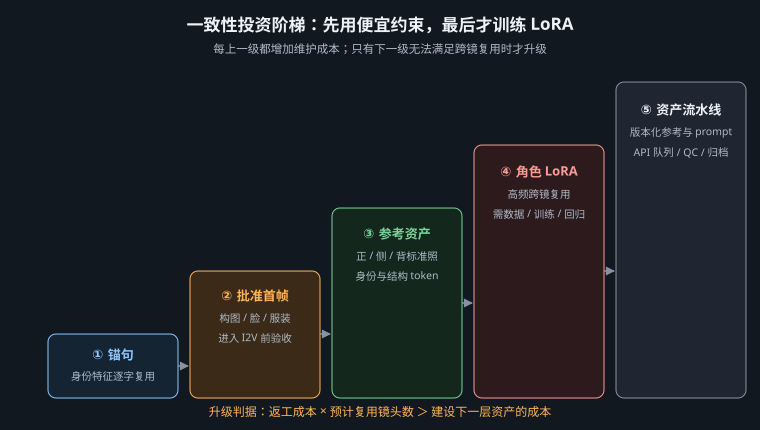
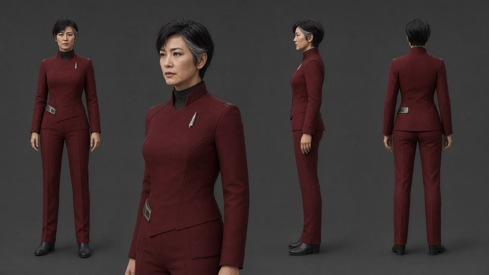

先用资产与参考图解决一致性，再让内容 LoRA、API 队列、质检状态机和可追溯归档服务于真正的规模
角色一致性至少包含身份、年龄、骨相、发型、服装结构、配色、道具、表演边界与光线适配；系列项目还要锁声音。一个镜头的脸很像，但制服徽章换边、侧脸年龄骤降、每次都出现不同耳饰，仍然是不一致。星舰、机甲与场景同理：要先写出三到五个可数锚点，再谈参考图或 LoRA。技术只能放大定义，不能替团队发明定义。
| 级别 | 方法 | 成本 | 适用 | 升级信号 |
|---|---|---|---|---|
| Lv.1 文字锚 | 冻结角色卡与逐字一致的锚句；固定服装、禁用项和镜头规则 | 最低 | 远景、短片、角色只出现少量镜头 | 同一模型仍频繁改变骨相或服装分区 |
| Lv.2 参考资产 | 中性光多角度设定图 + 身份/结构参考节点；首帧先批准 | 低到中 | 单部短片、有近景与侧脸 | 参考图带来的算力和返工长期高于训练成本 |
| Lv.3 内容 LoRA | 用清洁数据训练角色、物体或私有风格补丁 | 中到高 | 系列化、多集、多角度、高复用资产 | 只有在量产回本账成立时进入 |


用同一锚句、同一底座、同一多角度参考图跑一组正面、四分之三、侧面、全身、低光、强表情测试。若 Lv.2 已满足项目门槛，就不要为了“更专业”训练 LoRA。LoRA 是规模工具，不是荣誉勋章。
角色参考集应使用中性软光、纯色背景、中性表情与完整轮廓，主体占画面约 60%～80%；至少覆盖正面、左右四分之三、正侧面和全身正背。避免强逆光、遮脸、夸张景深、滤镜、文字、首饰随机变化。训练与参考图中混入戏剧光，会把蓝色阴影或橙色轮廓误学成身份；混入多个制服版本，会让推理时随机抽取。
一致性锚句示例： Captain Lin Yue, a 42-year-old East Asian woman, short black hair with one silver-gray lock at the temple, structured muted-crimson uniform over a black high collar, one slender silver ship insignia on the left chest and a narrow silver utility belt, calm restrained expression, same facial geometry and age, no scar, no hat, no cape, no extra medals
锚句只写稳定变量，场景、景别、光线和动作在后面追加。若把“蓝色右侧光”“85mm 特写”也塞进身份锚句，它们会在不该出现的场景重复。参考强度从低到高做 A/B：过低时身份漂，过高时姿态、表情和光线被标准照冻结。验收看正侧脸与极端光线，不只看最容易成功的正面证件照。
内容 LoRA 学的是角色、物体或风格概念；少步数加速 LoRA 改变的是采样行为，两者目的、数据与训练日程不同，不能混为一谈。投产判断可用简单账本：未来镜头数 × 当前每镜参考与返工损耗，是否显著大于数据清洗、训练、验证、版本维护和底座升级后的重训成本。单条 60 秒片通常 Lv.2 足够；同角色要拍多集、广告变体和多语言版本时，训练才可能回本。
| 数据环节 | 要求 | 常见污染 | 检查 |
|---|---|---|---|
| 收集 | 覆盖身份相关角度、景别、表情与光线；服装版本分开 | 大量近似正脸导致侧脸不会；重复帧权重过高 | 按角度和景别统计，不按“看起来好看”统计 |
| 清洗 | 删除结构错误、过度美化、压缩严重、他人入镜与错误配件 | 把生成瑕疵训练成角色特征 | 200% 检查眼、耳、手、徽章、边缘与文字 |
| 裁切 | 兼有头像、半身、全身与环境比例；保留必要上下文 | 全是大头照导致全身和服装失败 | 建立裁切联系表，避免同一原图重复泄漏 |
| 标注 | 触发词 + 可变属性；稳定身份不被一长串同义词稀释 | 漏标背景/服装，使模型把它们绑定身份 | 训练标注与推理提示词使用同一概念词典 |
| 划分 | 训练集与验证集按原始来源分离 | 同一视频相邻帧分到两边，形成数据泄漏 | 验证图必须是模型没见过的原始来源和组合 |
图像 LoRA 常从数十张高质量图起步，视频 LoRA 则需要更多短片段与运动覆盖；具体数量、分辨率、rank、学习率和训练步数必须跟底座与训练器版本走，不能照抄旧教程的常数。先做小规模过拟合测试确认数据和触发词有效，再扩大训练。每个 checkpoint 用同一验证矩阵比较，不以训练 loss 最低作为唯一答案。
| 维度 | 测试 | 通过标准 | 失败含义 |
|---|---|---|---|
| 视角 | 正面、左右 3/4、正侧、背侧回头 | 骨相、年龄与锚点保持 | 角度覆盖不足或过拟合正脸 |
| 景别 | 特写、半身、全身、环境远景 | 脸与服装分区都稳定 | 裁切分布失衡 |
| 光线 | 中性软光、冷侧光、暖逆光、低调光 | 身份不依赖某种色温 | 训练图光色污染 |
| 表演 | 平静、轻笑、紧张、说话 | 表情变化而骨相不变 | 参考过强或训练表情单一 |
| 组合 | 新场景、新镜头、新道具 | 能服从提示词且不复制训练背景 | 背景绑定、记忆化或权重过强 |
无论提示词如何都回到同一角度；背景或灯光像水印一样重复；提高权重后身份更像但表情与姿态迅速僵死。处方依次是去重与补覆盖、改正标注、缩短训练或改用更早 checkpoint、降低推理权重。不要用更高权重掩盖数据问题。
批量不是把同一错误一夜复制一百次。进入 API 前，每条任务必须已有批准首帧、镜头卡、目标时长、模型基线、风险档与输出命名。ComfyUI 工作流先通过界面导出 API 格式 JSON；脚本只修改白名单节点，绝不依赖教程里的节点 ID，因为每个本地工作流都不同。常用端点包括提交任务的 POST /prompt、查看队列的 GET /queue 与读取历史的 GET /history/{prompt_id}，实际字段以当前官方 API 与导出文件为准。
shots.csv shot_id,first_frame,seconds,video_prompt,risk,version,status S01,frames/HB_S01_FF_v03.png,8,"ship drifts slowly...",standard,1,approved S07,frames/HB_S07_FF_v02.png,5,"pupil contracts once...",hero,1,approved
# 伪代码：节点 ID 必须来自你自己的 workflow_api.json
workflow = load_json("workflow_api.json")
for shot in read_csv("shots.csv"):
if shot.status != "approved" or output_exists(shot):
continue
job = deep_copy(workflow)
set_input(job, FIRST_FRAME_NODE, "image", shot.first_frame)
set_input(job, PROMPT_NODE, "prompt", shot.video_prompt)
set_input(job, DURATION_NODE, "seconds", shot.seconds)
set_input(job, SAVE_NODE, "filename_prefix", build_name(shot))
validate_whitelist_diff(workflow, job)
prompt_id = post_json("/prompt", {"prompt": job})
append_manifest(shot, prompt_id, workflow_hash(job))
validate_whitelist_diff 是产线安全阀：比较模板与任务，只允许首帧、提示词、时长、种子和文件名前缀变化；模型、精度、分辨率或后期参数若被意外改动，任务拒绝入队。提交后保存 prompt_id、工作流哈希和时间，不只看输出目录猜任务是否完成。
DRAFT → READY_FOR_REVIEW → APPROVED → QUEUED → RUNNING
→ GENERATED → QC_PASS → LOCKED → POST → DELIVERED
└→ QC_FAIL(ID/GEO/MOT/COL/AUD/TECH) → REVISION → APPROVED
自动化可以判断文件存在、编码成功、分辨率、帧率、时长与音轨；身份、构图、运动合理性和表演仍需人工门禁。失败任务不可原样无限重试：OOM 属于 TECH，可降分辨率、启用分块或调整队列；身份失败属于 ID，应检查参考与首帧；运动失败属于 MOT，应改动作而非只换种子。每类原因统计通过率，下一轮才能知道产能瓶颈。
| 必须记录 | 为什么 | 建议字段 |
|---|---|---|
| 模型与权重 | 同名文件可能被替换，版本名不足以复现 | 官方来源、文件名、大小、SHA-256、许可证快照 |
| 节点与环境 | 节点更新会改变参数含义和输出 | ComfyUI 提交号/版本、custom node 提交号、Python/CUDA/PyTorch、GPU |
| 生成输入 | 方便重做和审核 | 工作流 JSON、提示词、种子、参考资产版本、LoRA 权重与强度 |
| 输出技术信息 | 防止“看起来一样”掩盖规格变化 | 分辨率、fps、时长、编码、色彩空间、音频采样率 |
| 批准链 | 区分候选、入选和最终资产 | 负责人、状态、日期、评语、失败原因码、上游版本 |
种子不等于绝对复现。GPU 内核、精度、注意力实现、节点版本和非确定性算子都可能让相同种子产生差异。真正的复现单元是“输入资产 + 工作流 + 软件环境 + 权重哈希 + 运行参数”。对锁定项目应冻结环境；需要升级时复制一套环境做回归测试，不在原环境直接更新。
PROJECT_HOMEBOUND/ ├─ 00_governance/ brief, license, consent, change-log ├─ 01_bibles/ character, ship, set, style, color ├─ 02_training/ raw, clean, captions, split, config, checkpoints, eval ├─ 03_workflows/ api-json, ui-json, environment-lock, node-manifest ├─ 04_shots/S01/ source, approved-first-frame, generations, qc, locked ├─ 05_audio/ dialogue, ambience, sfx, music, stems, licenses ├─ 06_post/ upscale, interpolation, color, subtitles, edit-exchange ├─ 07_delivery/ masters, derivatives, checksums, qc-report └─ manifest.csv
训练原始数据与清洗数据分开；删除一张错误训练图时，不能失去来源证据。LoRA checkpoint 不只保留“best”，还要保留训练配置、数据集版本和验证联系表。镜头目录只允许一个 LOCKED 指针指向批准版本，禁止靠复制文件名表示状态。交付目录生成校验值，迁移后抽查能否打开。
□ 锚点和禁用项已经文字化；□ Lv.2 基线已测，LoRA 回本账成立；□ 数据有来源、授权、清洗与独立验证集；□ 验证矩阵覆盖侧脸、全身、新光线与新场景；□ 批量任务只有批准状态能入队；□ 脚本只改白名单节点；□ 每个任务保存 prompt_id、工作流哈希和版本；□ 技术检查自动化，审美门禁保留人工；□ 失败原因可统计；□ 权重、节点、许可证和训练数据可追溯；□ 锁定项目环境被冻结并可恢复。